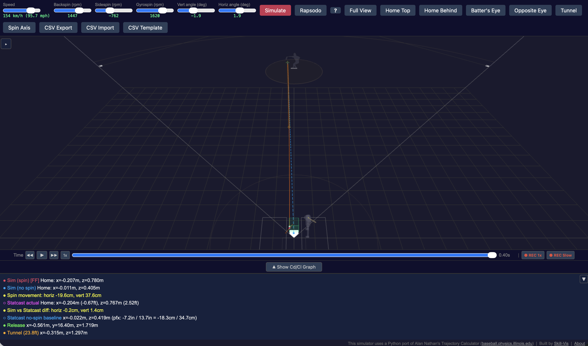

Baseball Pitch Trajectory Simulator
リリースからキャッチャーミットまで — 投球の3D軌道を見る

できること
投手の名前を入力すると、MLB Statcastからその投手の実際の投球データ（フォーシーム、スライダー、カーブ、チェンジアップなど）を取得します。データは2016年から現在のシーズンまで利用可能です。投球を選んでSimulateを押すと、ピッチャーの手からホームプレートまでの軌道が3Dで表示されます。
この軌道は映像に基づくアニメーションではありません。物理シミュレーションです。リリース速度、回転数、回転軸から、イリノイ大学のAlan Nathan教授が開発した空気力学モデル — 野球の軌道研究における標準的なリファレンス — を用いて計算しています。
活用シーン
ピッチングコーチ向け
投手のフォーシームとチェンジアップをOverlayして、トンネリングが効果的かどうかを確認。2つの軌道がどこで、いつ分岐するかを正確に見ることができます。
アナリスト向け
投手間のスピン分解（バックスピン、サイドスピン、ジャイロスピン）を比較。Season Summary APIで球種別のシーズン通算データやスピン効率を一括取得。完全な軌道データをCSVエクスポートして、さらなる分析が可能です。
選手育成向け
Rapsodoの計測データを直接入力して軌道をシミュレーション。回転数や回転軸を変えた「もしも」のシナリオをテストできます。
主な機能
| 機能 | 説明 |
|---|---|
| MLB Statcast連携 | 投手を検索し、試合ごとの投球データを閲覧、個別の投球をシミュレート |
| Season Summary API | 球種別の平均値（球速、回転数、変化量、BSG分解、スピン効率）と月別推移を一括取得 |
| 3つの入力モード | Statcastデータ、手動スライダー、Rapsodo計測値 |
| Overlay比較 | 複数の投球を重ね合わせて軌道を比較 |
| バッター視点 | バッターボックスからの一人称カメラ — 打者が見る景色を体験 |
| ピッチトンネル | 打者が判断を迫られるトンネルポイント（23.8フィート）を可視化 |
| スピン軸表示 | 実際の角速度で回転する縫い目テクスチャ付きボールとスピン軸矢印 |
| CSVインポート/エクスポート | 速度、加速度、力の内訳を含む完全な軌道データ |
| 動画録画 | 3Dビューをmp4としてエクスポート |
| 共有リンク | シミュレーション結果をURLで共有 — リンクを開くだけで同じ投球を再現 |
| Claude Desktop (MCP) | 自然言語でStatcastデータの検索やシミュレーションを実行。セットアップガイド |
| CLモデル調整 | Statcastフィッティング済み（cl2=1.045）またはNathanオリジナル（cl2=1.12）を選択可能 |
球種一覧
シミュレータはMLB Statcastと同じ球種分類とカラーコードを使用しています：
FF フォーシーム SI シンカー FC カッター SL スライダー CU カーブ CH チェンジアップ FS スプリッター ST スイーパー
物理の仕組み
シミュレータは、空気中を進む回転するボールの運動方程式を解いています：
- 抗力（ドラッグ） — ボールを減速させる（速度に逆らう力）
- マグナス力 — スピン軸と速度の両方に垂直な方向にボールを押す
- 重力 — ボールを下に引く（g = 9.80 m/s²、MLB球場平均）
スピンは3つの正規直交成分に分解されます：
- バックスピン — 速度に垂直かつ水平面内の軸周りの回転。「ライズ」を生み出します（重力に抵抗）。バックスピン2200rpmのフォーシームは、スピンなしのボールに比べて約40cm落下が少なくなります。
- サイドスピン — 速度とバックスピン軸の両方に垂直な軸周りの回転。水平方向の変化を生みます。
- ジャイロスピン — 速度方向周りの回転（弾丸のような回転）。マグナス力には寄与しません。ジャイロスピンが多く、バック/サイドスピンが少ない投球は、総回転数が高くても変化が小さくなります。
BSG基底は正規直交系です：eb = eg × eZ（水平面内）、es = eb × eg。ここでegは速度方向、eZは鉛直上向き。成分間の漏れがない正確な分解を保証します。
ボールのパラメータはNathanのExcel軌道計算機に準拠：質量 = 5.125 oz、円周 = 9.125 in。
シミュレーションは4次ルンゲ・クッタ法で0.001秒刻みの積分を行っています。
APIアクセス
シミュレータは公開REST APIを提供しています。主なエンドポイント：
| エンドポイント | 説明 |
|---|---|
POST /statcast/search |
投手を名前で検索 |
POST /statcast/games |
投手の年間登板日を取得 |
POST /statcast/pitches |
特定の試合の全投球データを取得 |
POST /statcast/simulate |
軌道シミュレーションを実行 |
POST /statcast/season_summary |
シーズン通算の球種別サマリー（BSG分解・月別推移付き） |
APIキー不要。ベースURL: https://baseball.skill-vis.com
Claude Desktopからの自然言語アクセスについてはMCPサーバーのセットアップガイドをご参照ください。
クレジット
- 物理モデル: Alan Nathanの軌道計算機
- 投球データ: MLB Statcast（Hawk-Eyeトラッキング）
- 野球ボールの縫い目曲線: mathcurve.com のパラメトリック表現
- CLモデル較正: 2025年シーズン6投手120球によるフィッティング